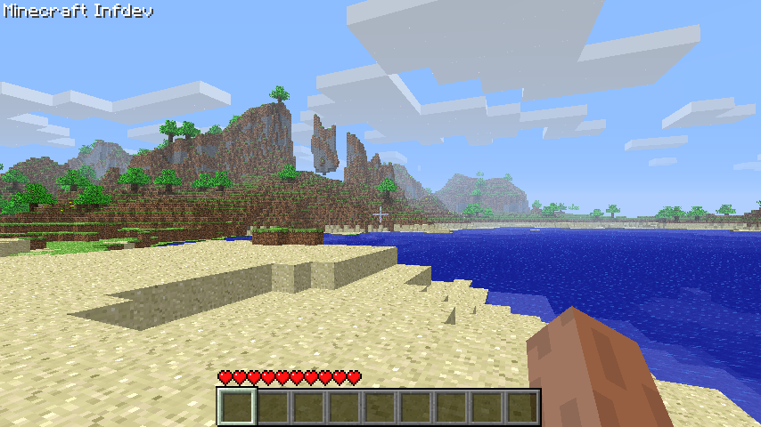

Minecraft Minecraft is a sandbox survival and creativity game where players can explore blocky worlds, collect resources, craft tools, build structures, fight monsters, and create almost anything they can imagine.
The game was first created by Markus “Notch” Persson and later developed by Mojang Studios. Even though Minecraft looks simple because everything is made of blocks, the game became popular because it gives players a huge amount of freedom. There is no single correct way to play: you can survive, build, explore, fight, farm, mine, or just relax.

Why is Minecraft SPECIAL?
🞕 it mixes creativity, survival, exploration, and problem solving
🞕 it helps people learn teamwork, planning, logic, design, and creativity
Main game modes:
🞕 Survival Mode — collect resources, craft items, fight mobs, eat food, and try to stay alive.
🞕 Creative Mode — unlimited blocks, flying, no danger, perfect for building and experimenting.
🞕 Adventure Mode — made for custom maps where players follow rules created by map makers.
🞕 Spectator Mode - this mode lets you observe others as an intangible and invisible ghost.
🞕 Hardcore Mode — survival mode, but with only one life. If you die, the world is gone!
Why do people still play it?
🞕 every world is different
🞕 Players can install mods, join servers, play minigames, build with friends, or start a new survival world whenever they want.
🞕 It is not just a game with levels; it is more like a digital playground.